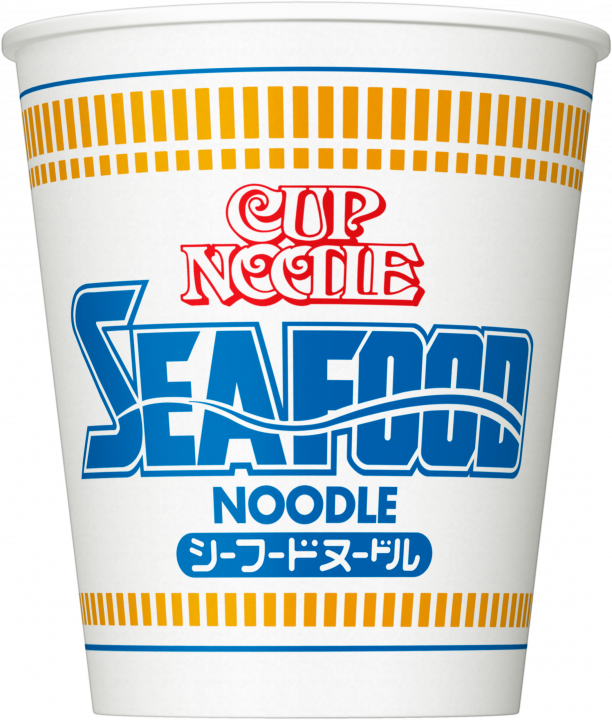
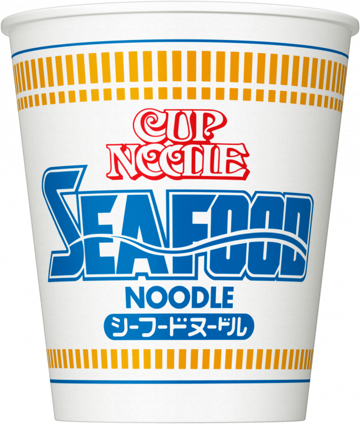

インスタント麺に関する情報をまとめたサイトです。このサイトではインスタント麺の種類や味などを細かく設定し、検索することができます。また、ユーザーが口コミを投稿することもできます。投稿された口コミは、他のユーザーが参考にできるように掲載されます。 このサイトは、インスタント麺に興味がある人や、新しいインスタント麺を探している人にとって役立つ情報を提供することを目的としています。
| 目次 | ||||
| カップ麺 | 袋麺 | うどん | そば | 焼きそば |
|---|

 

しょうゆ
100円
世界初のカップ麺。つるみのあるしなやかな麺に、おなじみのペッパーのきいたオリジナル スープ。グ材は味付豚ミンチ、ミンチポーク、エビ、卵、ねぎ。
魚介のうまみを濃縮したシーフードスープ。つるみのあるしなやかな 麺にポークベースに魚介や野菜のうまみを濃縮したスープ。具材はほぼ イカ、イカ、かにかま風味かまぼこ、卵、キャベツ、ねぎ。
ポークや野菜のうまみと乳製品のまろやかカレー つるみのある少し太めのしなやかな麺にポークや野菜のうまみと 乳製品でまろやかに仕上げたスープ。具材にポテト、味付豚ミンチ ミンチポーク、にんじん、ねぎ。


スパゲッティ
200円
ポークをベースに、味と香りに特徴のある８種のみそを絶妙にブレンドし、香り豊かな香味野菜をきかせたバランスの良いスープが、ひと味ちがう奥深いコクと風味をもたらしています。みそを練り込むことでスープとの一体感に優れためんは、もちっとしたしなやかな食感をお楽しみいただけます。さらに別添の「七味スパイス」がスープの味わいを引き締めます。どんな具材とも相性が良い味づくりで長年愛され続けている、インスタントラーメンを代表するロングセラー商品です。
厳選された小麦粉に山芋の粉を練り込んだモチモチ食感のめんは、喉越しの良いみずみずしさが特長です。スープはチキンとポークをベースにオニオン、ガーリックなどの野菜のうまみと香辛料を絶妙なバランスで配合し、すっきりしながらも具材の味をしっかり受けとめる、真似のできないコク深い味わいに仕上げました。また別添の「切り胡麻」がスープに豊かな風味を添えています。
世界初のインスタントラーメン。お湯かけ3分、煮込んで1分で調理できる。黄身ポケットと白身ポケットのWたまごポケット。


スパゲッティ
200円
鰹節と昆布のだしを利かせた風味豊かな東向けつゆに、コシのあるうどん、味のしみた大きなお揚げ。
本鰹と宗田鰹の2種のかつおだしと丸大豆醤油を使用したつゆと、豆腐屋さんと同じ製法で作った丸大豆100%のおあげが特長のきつねうどんです。
やや甘めの味付けに肉の旨みが溶け込んだつゆが、どん兵衛ならではのもっちりとしたつるみのあるうどんによく合います。具材は味付牛肉、ねぎ、わかめ、揚げ玉です。


スパゲッティ
200円
鰹節だしを利かせ、醤油と砂糖を合わせた東向けつゆに、のどごしのよいそば、香ばしい小えび天ぷら。
なめらかなそばに、鴨だしの旨み・醤油感と甘さが上品なコクのあるつゆ。香味豊かな液体つゆ仕立て。
本鰹と宗田鰹の2種のかつおだしのＷだしを使用したコクと深みを感じさせるつゆと、あとのせサクサク天ぷらが特長の天ぷらそば。


スパゲッティ
200円
本格的鉄板やきそばをイメージし、コシのある麺、飽きのこないまろやかな味のソースでご好評を頂いております。
焼そばを鉄板で炒めたときの香ばしいロースト感を再現、旨味の詰まったソースの香りが溢れ食欲を刺激する香り高きソースが特徴。「ソースが食いたい！」そんな時に心もお腹も満足できる、旨さと香りの濃厚カップ焼そば。商品名のU.F.O.は商品特長である「うまいソース（うまい＝U）、太い麺（ふとい＝F）、大きいキャベツ（大きい＝O）」を表しています。
原点回帰！旨さ鉄板！ソースねり込み麺は、現行品から 1.3 倍量のソースをねり込みました。鉄板で焼いたような香ばしいかおりと味わいに更に磨きをかけました。